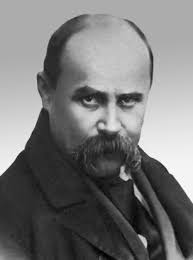

Тарас Григорович Шевченко — голос української душі

Тарас
Шевченко
— не просто
поет, а символ національного пробудження,
духовний лідер українського народу. Його творчість охоплює поезію,
живопис, прозу та глибоку громадянську позицію, яка й досі надихає
покоління.
Основні факти про Шевченка:
Народився 9 березня 1814 року в селі Моринці, Київська
губернія.
Був кріпаком, але завдяки таланту і підтримці друзів здобув
свободу.
Навчався в Петербурзькій академії мистецтв.
Автор «Кобзаря» — збірки, що стала духовним кодом українців.
Був засланий за участь у Кирило-Мефодіївському братстві.
Вплив Шевченка на українську культуру:
Створив літературну мову, близьку до народу.
Підняв теми соціальної несправедливості, кріпацтва, національного
гніту.
Надихнув українське відродження у XIX–XX століттях.
Його образ став символом боротьби за свободу і гідність
Вплинув на розвиток українського мистецтва — як поет, художник і
мислитель.